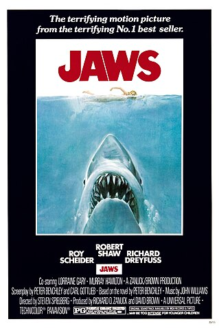

Recommended
Jaws is a 1975 American thriller film directed by Steven Spielberg, based on the 1974 novel by Peter Benchley. It stars Roy Scheider as police chief Martin Brody, who, with the help of a marine biologist (Richard Dreyfuss) and a professional shark hunter (Robert Shaw), hunts a man-eating great white shark that attacks beachgoers at a summer resort town. Murray Hamilton plays the mayor, and Lorraine Gary portrays Brody's wife. The screenplay is credited to Benchley, who wrote the first drafts, and actor-writer Carl Gottlieb, who rewrote the script during principal photography.